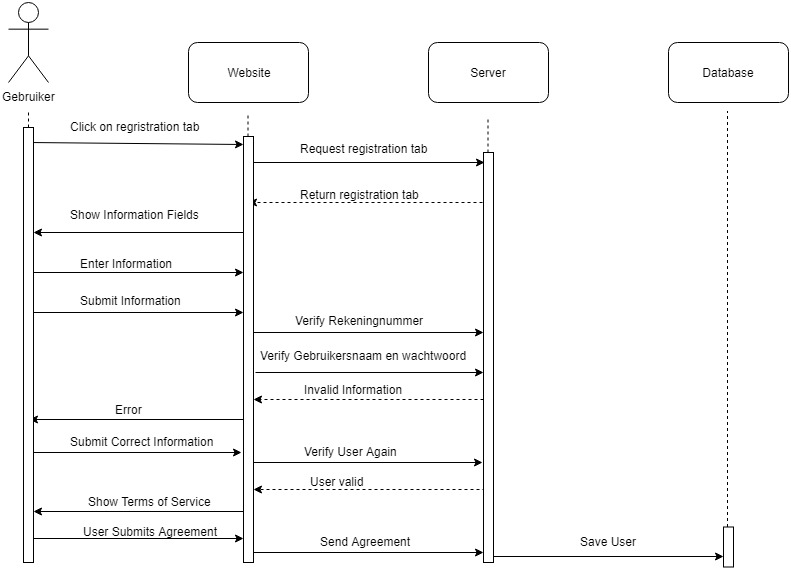
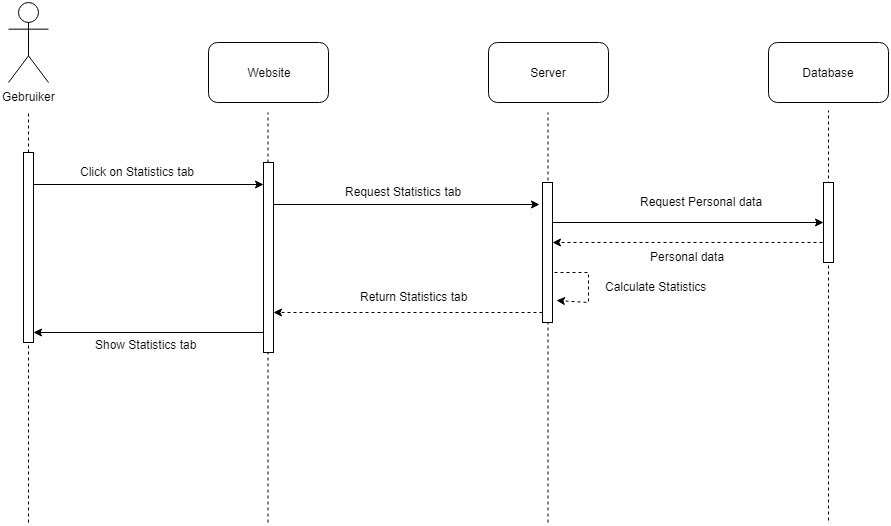
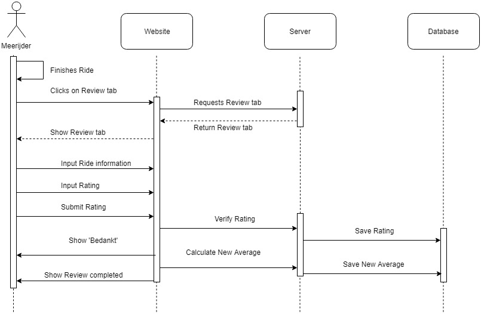
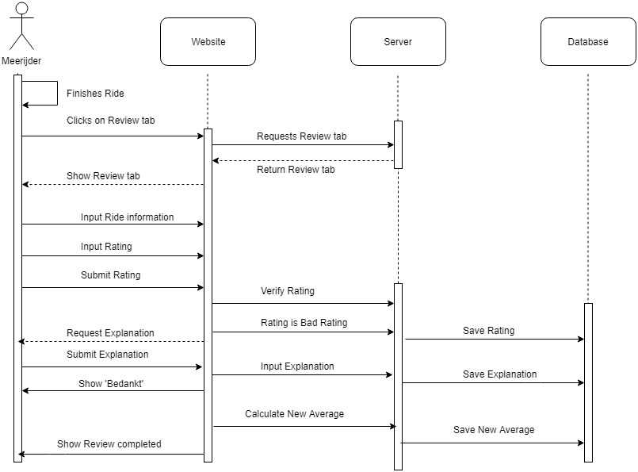
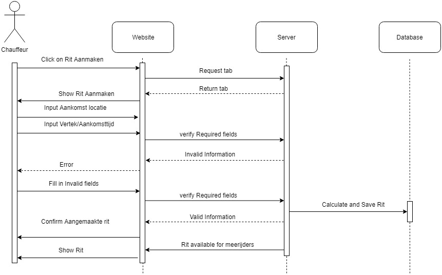

Architecture design
Swimlane diagram

Class diagram

Sequence diagrams
Sequence diagram U1 - Account aanmaken

Sequence diagram U2 - Inzien besparingsstatistieken

Sequence diagram U7 - Rating invoeren

Sequence diagram U7 - Aternative flow rating invoeren

Sequence diagram U9 - Rit aanmaken
